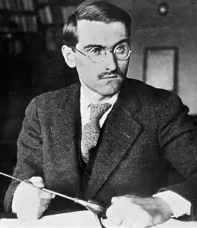

АНУЙ, Жан (Anouilh, Jean — 23.06.1910, Бордо — 03.10.1987, Лозанна, Швейцарія) — французький драматург.Ануй народивсь у сім'ї з невеликими статками і без надій на покращення становища. Його батько, Франсуа Ануй, був службовцем казино, а матір, Марія-Магдален Сулю — скрипалькою у жіночому оркестрі. Робота батьків дала можливість рано познайомитися зі світом сцени, щовечора спостерігати за тим, що відбувається на естрадах кафе чи невеликих концертних залів. Найцікавішим для Ануя був не сюжет постановок, а гра акторів, поведінка людини на сцені.
У двадцять років Ануй спробував написати свій перший твір — "драму у віршах", але вона не була закінчена. "Зіпсовані" п'єси — так назве він згодом свої перші спроби. Переїхавши в Париж, Ануй вступив у школу Кольберт Колежу Шанталь, після закінчення якої продовжив навчання на факультеті права в університеті. Проте через півтора року він залишив Сорбонну і влаштувався на роботу в рекламне агентство. "Уроки точності та винахідливості", отримані тут, були не менш важливими для початкуючого журналіста, ніж проба пера. Новий етап у житті Ануя пов'язаний із секретарюванням у Луї Жуве, керівника Комедії Єлисейських полів. Поза сумнівом, цей час був не з легких. Жуве був прихильником жорсткої дисципліни в театрі, оскільки уявляв театр світом, що існує за своїми законами. Відносини режисера та секретаря не склалися.
Роки в театрі Жуве були для Ануя часом вимученої зупинки, заціпеніння, творчої бездіяльності. Саме на ці роки припало становлення Ануя-драматурга, яке відбувалося під впливом драматургії Ж. Жіроду, з творчістю якого Ануй вперше познайомився у стінах Комедії Єлисейських голів. "Жіроду був для мене справжнім шоком, я б хотів бути схожим на нього", — зізнався Ануй вже після смерті свого вчителя у статті 1944 р. Там само він зазначив, що метафоричність стилю і звернення до класичного міфу — дві тенденції творчості Ж. Жіроду, які врятували на початку 30-х років театр від рутини дріб'язковості. У 1931 р. Ануй залишив театр Л. Жуве, на той час він уже створив декілька п'єс, які, щоправда, потім викреслив зі своєї творчості. У 1932 р. відбулася прем'єра п'єси "Горностай" (L'Hermine") на сцені паризького театру "Евр" ("L'Euvre"), постановка була вдалою, але пройшла майже непоміченою. Цього самого року Ануй одружився з актрисою Монель Валентін. Шлюб цей навряд чи можна назвати щасливим, не був він і тривалим. У них народилася дочка Катрін. Ці роки життя драматурга-початківця часто називають одним словом: злидні. У 1935 р. Ануй написав "Жив-був каторжанин..." ("J'avait un prisonnier"). Голлівуд купив право на постановку фільму за п'єсою, проте проект не вдалося здійснити. Через два роки, 17 лютого 1937 р., на сцені театру "Ле Матюрен" ("Les Mathurins") Людмила та Жорж Пітоєви здійснили постановку п'єси "Мандрівник без багажу" ("Le Voyageur sans bagage"). Спектакль йшов протягом 190 вечорів, п'єса була перекладена багатьма мовами, а в 1944 р. на екрани вийшов однойменний фільм. Чи існує минуле? Над цим питанням задумався драматург і дійшов висновку, що спроба скинути тягар минулих літ, успішна в театральному щасливому фіналі, можливо, не безглузда, проте приречена на невдачу в реальному житті. Минуле, збережене в людській пам'яті, визначає якщо не істинну суть особистості, здатної до змін, то її доленосне місце у світі. Прем'єра п'єси "Мандрівник без багажу" стала подією театрального життя Парижа. В тому, що початок творчого шляху Ануя був таким вдалим, величезна заслуга Ж. Пітоєва, до якого Ануй ставився з особливим пієтетом, присвятив його творчості ряд статей: "Мій любий Пітоєв"("Моп cher Pitoeff"), "Данина поваги Жоржу Пітоєву" ("Hommage a Georges Pitoeff) та ін. В одному з листів до Ж. Пітоєва драматург зазначив, що те, як "простакувато і гарно" режисер переповів Аную його ж п'єсу, було важливішим для автора, ніж блискуча прем'єра, та й сама постановка. У цьому ж 1937 р. Ануй запропонував для постановки п'єсу "Бал злодіїв" ("Le bal des voleurs"), яка також мала сценічний успіх. У цей час з'явилася велика кількість публікацій, про Ануя почали говорити. Відтоді розпочався шлях завдовжки в десятиліття, назву для якого можна запозичити із заголовка статті французького дослідника Ф. Бастіда "Ануй стає великим" ("Anouilh devient une grand personne"). Узимку 1940/41 pp. були здійснені постановки ще двох п'єс: "Леокадія" ("Leocadia", 1939) і "Побачення в Санлісі" ("Le rendez-vous de Senlis", 1937). Разом з раніше написаною п'єсою "Бал злодіїв" ці твори склали збірку "Рожеві п'єси" ("Pieces roses"). Автор об'єднав п'єси у збірку, взявши до уваги їхню жанрову специфіку. "Рожеві п'єси" — твори з відчутним комедійним, фарсовим звучанням зовнішнього плану дії. Внутрішній конфлікт має трагедійну тональність — це конфлікт "чистої" людської душі з буденного світу фальші, світу брудної гри, що прагне поглинути і розчинити у собі живу душу. Щасливий фінал "рожевих" п'єс не призводить до розв'язання цього внутрішнього конфлікту. "Рожеві смуги На чорному небі" — так охарактеризували журналісти творчість Ануя. У другу збірку — "Чорні п'єси" ("Pieces noires", 1942) увійшли чотири твори: "Горностай", "Дикунка" ("La sauvage", створ. 1934), "Мандрівник без багажу", "Евридіка" ("Eyrydice", 1941). Остання п'єса була поставлена в театрі "Ательє" ("L'Atelier") близьким другом драматурга режисером А. Варсаком, а дружина A.M. Валентін виконала роль Евридіки. Про тональність цієї збірки говорить сама назва. Посилення звучання трагедійного пафосу, вихід на передній план ідейно-філософського пласту, звернення до міфу, використання прийомів музичного мистецтва — характерні риси творів цієї збірки. Після постановки "Евридіки" близько півтора року драматург "мовчав". Францію окупували фашистські війська. Париж буде визволений у серпні 1944 р., а в лютому не лише в театральному, а й у політичному житті французької столиці відбулася значна подія: 4 лютого 1944 р. на сцені театру "Ательє" відбулася прем'єра п'єси "Антігона". Постановка супроводжувалася надзвичайним успіхом і витримала рекордну кількість вистав — п'єса йшла 500 вечорів. Ануй знову звернувся до античного міфу, але в його інтерпретації відчутний вплив ідей сучасної екзистенціальної філософії. Маленькій Антігоні дане право вибору і, зберігши своє "я", обравши смерть, вона здобуває свободу. Глядач побачив в образі Креонта втілення ідей фашизму, сліпої сили, котра відчутно програє правді тендітної Антігони. "Антігона", "Ромео та Жаннетт" ("Romeo et Jeannette", 1946), "Медея" ("Medee", 1946) склали збірку "Нових чорних п'єс" ("Nouvelles pieces noires", 1946). У 1947 p. з'явилася перша п'єса з нової збірки "Блискучі п'єси" ("Piecesbrillantes"). Це — "Запрошення до замку". У збірку також увійшли п'єси "Коломбо" ("Colombe", 1951), "Репетиція, або Кохання карає" ("La Repetition ou Г Amour puni", 1950), "Сесіль, або Школа батьків"("Сесіїе ou Гесоїе des Peres", 1954). Найвідомішою із цих п'єс є драма "Коломбо", поставлена в "Ательє" у лютому 1951 р. Вона ознаменувала початок перелому у світогляді Ануя, який поступово починав зневірюватися в "чистоті" своїх героїв-ідеалістів, стаючи на шлях їхньої дискредитації. З часом в образах його персонажів з'явилися комічні деталі, а згодом вони набули гротескного характеру. П'єса "Жайворонок" ("L'alouette", 1953), поставлена в театрі Гастона Баті "Монпарнас" ("Montpamasse") у 1953 p., — звернення Ануя до історичного минулого Франції. Історія Жанни Д'Арк — традиційна для драматурга трагедія "чистої" душі, котра взяла на себе "відповідальність за все людство". Особливе місце в творчості Ануя займали твори — п'єси і статті, присвячені Ж.-Б. Мольєру. Мольєр у житті і творчості Ануя, без сумніву, найзначніша постать. Ануй не лише розумів, а й тонко відчував природу комедії Мольєра, трагедію його життя. Драматург часто звертався до мольєрівських сюжетів: "Орніфль, або Крізний вітерець" ("Ornifle ou le Courant d'air", 1955). "Удаваний хворий", — писав статті та есе, присвячені Мольєру: "Присутність Мольєра" ("Presence de Моїіеге"), "Сьогодні, 17лютого, помер Мольєр"("Aujourd'hui, 17 fevrier mort de Моїіеге"), "Тартюф". Спільно з Лораном Лоденба створив сценарій "Крихітка Мольєр" ("Le petit Моїіеге", 1959) для фестивалю Компанії Мадлен Рено — Жан-Луї Барро, який відбувся у червні 1959 р. в Бордо; у 1960 р. написав одноактну п'єсу "Сон критика" ("Le Songe du critique") для постановки в якості "п'єси перед завісою" у спектаклі "Тартюф", який режисерував особисто. Після прем'єри одноактної п'єси "Оркестр" ("L'orchestre") у лютому 1962 р. Ануй відмовився від нових задумів. Майже шестирічне мовчання було спричинене ситуацією на французькій сцені — там панував театр С. Беккета та Е. Ионеско, А. Адамова та Ж. Жене. Хоча вони вважали Ануя своїм учителем, але сам Ануй не погоджувався з цим, театру абсурду він не визнавав. У 1968 р. драматург створив п'єсу, яка стала однією з вершин його творчості, — "Мій любий Антуан" ("Cher Antoine") і особисто здійснив її постановку. Це розповідь про останні дні життя популярного драматурга та його заповіт, це своєрідний підсумок творчого життя Ануя, який підбивався чесно і безжально. У 70-х роках Ануй писав п'єси для салонного театру, для вузького кола інтелектуалів, шанувальників його творчості. Такими є комедія "Любі птахи" ("Chers oiseaux", 1977), "Красиве життя" ("La belle vie", 1980), "Епізод із життя одного автора" ("Episode de la vie d'un auteur", 1980). Одним із найвідоміших творів цього періоду є п'єса "Штанці" ("La Culotte", 1978), у якій порушується проблема жіночої емансипації. У 80-х роках Ануй досить активно займався режисерською діяльністю, здійснюючи постановки як власних творів, так і п'єс інших авторів.Розлучений з Монель Валентін, драматург до самої смерті жив із другою дружиною — Ніколь Лансон і чотирма дітьми. Помер Ануй 3 жовтня 1987 року у Лозанні (Швейцарія). П'єси Ануя "Медея", "Жайворонок", "Антігона", "Жанна Д'Арк" та ін. входять до репертуару театрів України (Львів, Одеса, Суми, Чернівці, Миколаїв, Донецьк та ін.). Тв.: Укр. пер. — Жайворонок//Сучасність. — 1991. — №7-8. Рос. пер. — Пьесы: В 2 т. — Москва, 1969; Оркестр//Франц. драматургия. — Москва, 1984; Потасовка // Театр.— 1984.— № 12. Літ.: Барская Б. Я. Античные источники и проблематика пьесы Ануйя "Медея" // Проблемы разви-",'.я реализма в зар. лит. XIX—XX веков. — Одесса. 9"8; Бачелис Т.И. Драматургия. //История франц. —ЦТ.: В 4 т. — Москва — Ленинград, 1963. — Т. 4; Гаевский В. Голоса Жанны // Гаевский В. Флейта Гамлета. Образы совр. театра,— Москва, 1990; Зин-герман Б.И. Очерки истории драмы XX века. — Москва, 1979; Зонина Л.А. Жан Ануйль//Совр. зар. прам. — Москва. 1962; Якимович Т. К. Драматургия ,: театр современной Франции. — К.. 1968; Borgal CI. Anouilh, la peine de vivre. — Paris. 1966; Ginister ?. Jean Anouilh. Theatre. Tous les temps. — Paris, .969; Vandromme P. Jean Anouilh. Un auteur et ses —rsonnages. — Paris, 1965. А. Ардаб'єва